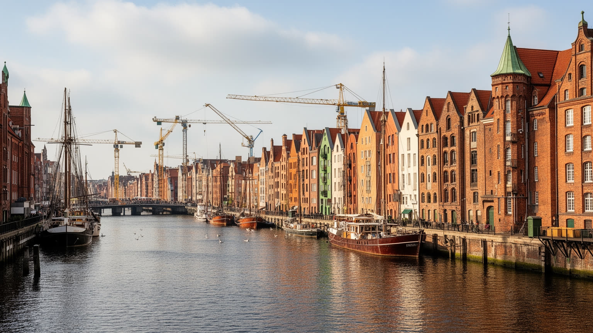
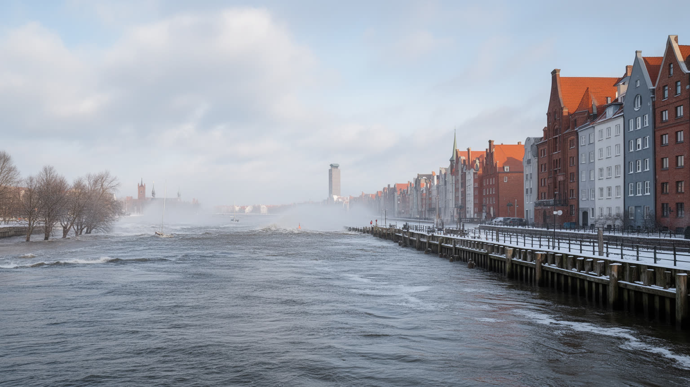
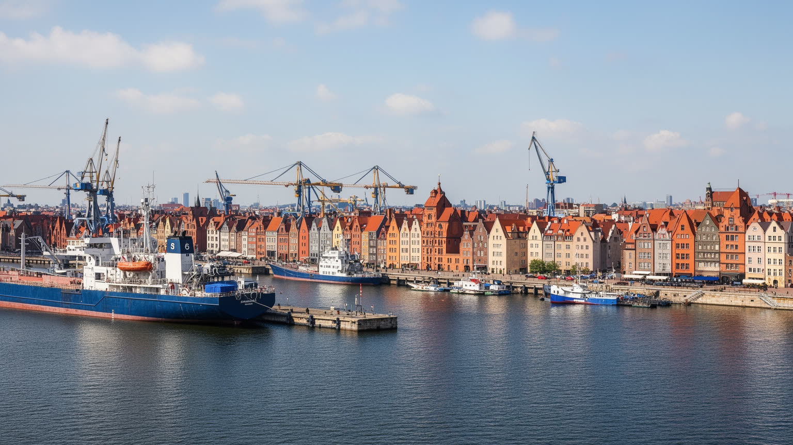
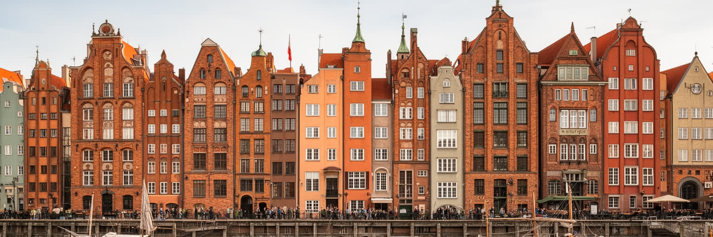
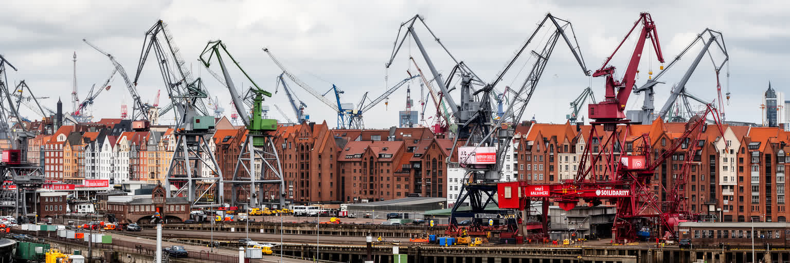
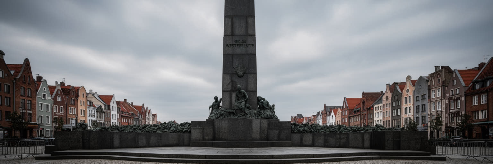
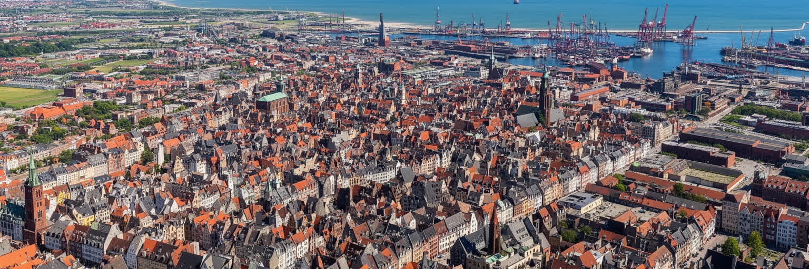
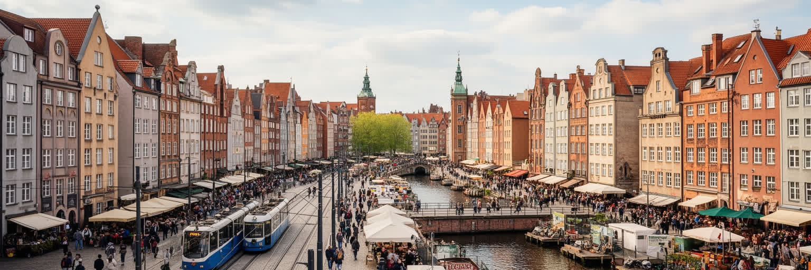
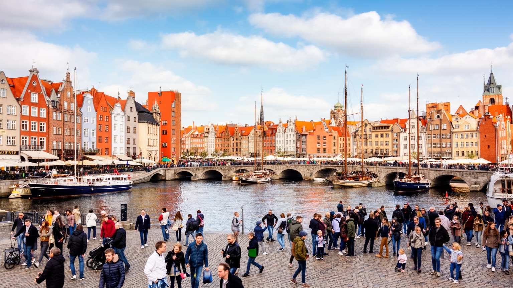
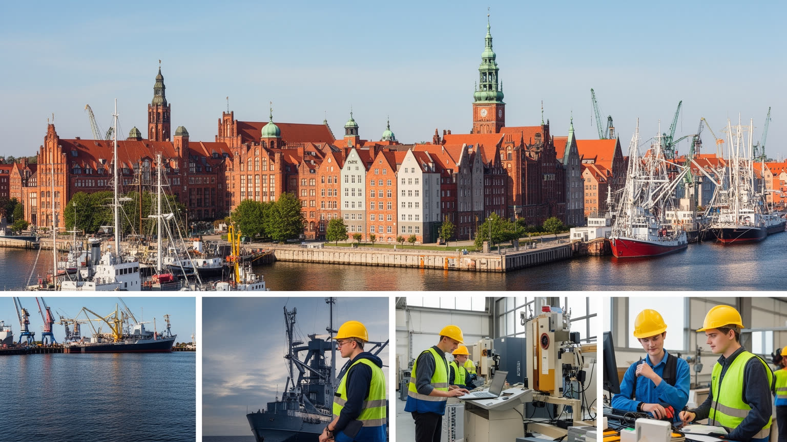

地政学
グダニスクはバルト海とヴィスワ水系を結ぶ港で、ポーランド、ドイツ、北欧、ロシア圏の力が交差してきました。港、軍事、交易、国境の記憶が都市の政治感覚を作り、欧州の東西関係も日常の海辺に深く残ります。

🇵🇱 ポーランド / ヨーロッパ / World City Atlas
バルト海の港、ハンザ都市の旧市街、造船所の労働運動、第二次世界大戦の記憶、琥珀の工芸、大学と観光が一つの湾岸都市圏で重なります。
都市の骨格
グダニスクはモトワヴァ川とヴィスワ河口、グダニスク湾、近隣のグディニャとソポトに支えられます。旧市街の記憶と港湾の物流、造船所跡の文化施設、海辺の住宅地が近い距離で連続します。

グダニスクはバルト海とヴィスワ水系を結ぶ港で、ポーランド、ドイツ、北欧、ロシア圏の力が交差してきました。港、軍事、交易、国境の記憶が都市の政治感覚を作り、欧州の東西関係も日常の海辺に深く残ります。
港湾、造船、修繕、物流、石油化学、観光、大学、ITが経済を支えます。造船所の労働運動は政治史になりましたが、現代の港もクレーン、倉庫、配送、整備、季節観光の仕事で動く労働都市です。今も街を支えています。
カトリック教会、ルター派やユダヤ系の記憶、カシューブ文化、ドイツ語圏との歴史が重なります。旧市街の復元、琥珀工芸、文学、音楽、戦争博物館は、都市が多層の過去を語る方法です。祈りも記憶も街に息づきます。
住民は海辺、公園、大学、団地、通勤鉄道を使い、観光客は旧市街、運河、造船所、海岸へ向かいます。家賃上昇、短期滞在、港湾交通、冬の風、観光の混雑をどう扱うかが、暮らしの質を左右します。調整も日々の焦点です。

グダニスクの第一の読み方は、旧市街の美しさより先に港の地理を見ることです。都市はモトワヴァ川、ヴィスワ河口、グダニスク湾に抱かれ、内陸の穀物、木材、工業製品を海へ出す場所として成長しました。バルト海は穏やかな観光の背景ではなく、北欧、ドイツ、ロシア圏、ポーランド内陸を結ぶ政治と物流の通路です。現代の港ではコンテナ、燃料、フェリー、倉庫、鉄道、道路が重なり、旧港の水辺とは別の速度で都市を動かします。港湾都市の豊かさは、船が見える場所だけでなく、通関、整備、保険、倉庫、清掃、警備、トラック運転、鉄道貨物の労働によって支えられます。港の拡張は雇用と税収を生みますが、騒音、交通、海岸環境、住宅地との距離も問題にします。グダニスクを見る時は、写真に残る運河と、普段は観光客が歩かない埠頭を一緒に読む必要があります。港は都市を世界へ開く装置であると同時に、外の景気、戦争、制裁、エネルギー価格に生活をさらす入口でもあります。鉄道貨物の結節点としての役割も大きく、港で降ろされた商品は内陸の市場や工場へ向かいます。潮の匂い、金属音、港近くの軽食売りも労働の時間を刻みます。夜明けの風も仕事を急がせます。湾岸の安全保障が揺らぐと、燃料費や食品価格は家庭の光熱費や店の棚にも届きます。その積み重ねが、海岸線から始まるこの街の地政学を形作っています。

グダニスクの旧市街は、古い建物がそのまま残った街というより、破壊と復元を経て作り直された記憶の都市です。長い市場通り、煉瓦の教会、門、倉庫、運河沿いのクレーンは、ハンザ交易と市民自治の繁栄を語りますが、第二次世界大戦の被害後にどの過去を選び、どの姿へ戻すかという判断も刻まれています。ポーランド語、ドイツ語、カシューブの文化が重なった港町で、商人、職人、船員、聖職者、移住者が都市の性格を作りました。現在の旧市街は観光客の歩行空間であり、レストラン、ホテル、琥珀店、パンや魚を売る市場、古書や古着の露店、博物館が集中します。燻製魚、焼き菓子、ビールの匂いは魅力ですが、観光向けの価格、短期滞在、住民向け商店の減少も起こします。復元された街並みは、単なる舞台装置ではありません。戦後ポーランドがこの都市を自分たちの歴史として受け止め直した過程を示す場所です。グダニスクの旧市街を歩くことは、商業の栄光を見るだけでなく、壊れた都市がどのような記憶を選び直したのかを読むことでもあります。教会の鐘、市庁舎の塔、運河の倉庫は、信仰、自治、貿易が別々ではなかった時代を伝えます。夕方の路上演奏や川沿いの会話の中でも、復元を担った職人、建築家、戦後移住者の労力は石畳に残っています。美しい正面の裏に、国境移動、追放、再定住、戦後の労働が重なっています。

グダニスク造船所は、産業施設であると同時に、二十世紀後半の欧州政治を変えた記憶の場所です。社会主義体制下で働く労働者は、賃金、物価、労働条件、言論、組合の権利をめぐって抗議し、連帯運動は職場の要求を国家の自由と尊厳の問題へ広げました。造船所の門、記念碑、欧州連帯センターは、観光名所である前に、労働者の死、監視、交渉、ストライキ、家族の不安を伝える場所です。冷戦の終わりは首都の会議室だけで決まったのではなく、港湾都市の職場と食堂と門前で形作られました。現在、造船所跡には文化施設、オフィス、住宅、ライブ、展示、屋外映画、クラブイベントの空間が入り、創造都市として再開発が進みます。SNSでは錆びたクレーンや壁画が都市の象徴として広がりますが、労働の記憶が消費される危険も持ちます。グダニスクを読むには、連帯を英雄的な物語だけに閉じず、仕事を失った人、技能の継承、産業転換、夜の文化で働く人、若い世代の雇用まで見なければなりません。造船、修繕、港湾機械の技能は、地域の学校や家庭の記憶にも残っています。記念施設が増えるほど、実際の作業音、油の匂い、賃金交渉の重さを想像する力が必要です。フードトラックやバーが増えるほど、警備、清掃、深夜交通も問われます。自由の象徴は、働く人が都市に残れる条件と切り離せません。造船所は過去の政治史ではなく、労働と再開発の現在を問う場所です。

グダニスクは、第二次世界大戦の始まりを語る時に避けて通れない都市です。自由都市ダンツィヒをめぐる緊張、ヴェステルプラッテへの攻撃、ポーランド郵便局の抵抗、住民の迫害、戦後の国境変更と人口移動は、街の名前と帰属を何度も揺さぶりました。戦争博物館や記念地は、軍事史だけでなく、民間人、少数者、難民、追放、占領下の日常を考える入口になります。戦後にドイツ系住民が去り、ポーランド各地から新しい住民が入ったことは、都市の記憶を複雑にしました。誰の故郷で、誰の痛みを語るのかという問いは、学校の授業、家庭の写真、地元メディアの記事、記念日のSNS投稿にも残っています。グダニスクの戦争記憶は、英雄的な抵抗だけではなく、隣人関係の崩壊、言語の交代、墓地、教会、学校、家の所有の問題まで含みます。子どもたちは遠足で博物館を訪れ、高齢者は失われた通りや家族の移動を語ります。観光客が旧市街の復元された美しさを見る時、その下には破壊と再定住の層があります。戦争を読むことは、現在の欧州で国境、移民、安全保障、歴史教育をどう扱うかを考えることです。ウクライナ戦争以後、バルト海沿岸の安全保障感覚はさらに鋭くなりました。記念式典の日には花、旗、合唱、報道カメラが集まり、静かな追悼と観光の視線が同じ広場に並びます。記憶は世代ごとに更新されます。

グダニスクの文化を理解するには、琥珀を単なる土産物として片づけない方がよいでしょう。バルト海沿岸で採れる琥珀は、古代から交易路を通じて南欧や内陸へ運ばれ、港町の商業と職人技を支えてきました。現在も工房、店、博物館、市場は、自然素材、加工技術、デザイン、観光消費を結びます。琥珀は美しい宝飾品であると同時に、採掘、選別、研磨、鑑定、販売、模造品対策、国際市場の価格変動に関わる産業です。旧市街で光る店先の背後には、小さな工房の技能と、観光客の期待に合わせて商品を作る緊張があります。聖ドミニク市の季節には、骨董、衣類、屋台料理、民芸品、即興演奏が通りを満たし、買い物は祝祭と路上経済の一部になります。グダニスクの琥珀文化は、港湾貿易の長い記憶と、現代のデザイン教育や観光経済をつなぐ入口です。大量生産の記念品だけでなく、職人が素材の色、亀裂、透明度を読み、磨く時の甘い樹脂のような匂いや指先の熱を感じると、工芸は街の理解を深めます。市場や祭りでは、地元の作り手、観光業者、海外の買い手が出会い、素材の価値が言葉と価格へ変わります。保存、認証、教育が弱ければ、工芸は単なる記号になってしまいます。若い作家が現代的な形へ更新し、SNSで作品を広げる余地も重要です。琥珀は海が運ぶ資源であり、手が価値へ変える素材です。

グダニスクの日常は、旧市街の観光景観だけでは見えません。住民は団地、郊外住宅地、海辺の地区、大学周辺、再開発地に暮らし、通勤鉄道やバス、自転車、車でグディニャ、ソポト、工業地帯、大学、港へ移動します。ポーランド経済の成長と観光人気は雇用を広げる一方、住宅価格と家賃を押し上げ、若い世帯、学生、季節労働者、低所得者に負担をかけます。旧市街や水辺で短期滞在向けの部屋が増えると、住民向けの店や学校、近所づきあいの密度も変わります。冬の風、湿気、暗さ、暖房費、海からの移動距離も生活条件です。港湾都市では、観光客が歩く水辺と、物流車両が走る道路、静かに暮らしたい住宅地が近接します。生活の質は、景観の美しさだけでなく、保育、医療、学校、公園、公共交通、買い物、静かな夜を確保できるかで決まります。グダニスクの住みやすさを測るには、歴史地区の成功と同時に、働く人が街に残れる住宅政策を見る必要があります。高齢者には雪や風の日の移動、子育て世帯には保育園と通勤、学生には家賃とアルバイトが重要です。都市圏が広がるほど、通勤鉄道の本数や乗り換えも生活の公平性を左右します。地域の市場や図書館も、暮らしを支える場です。近所の医療や公園も日常を守ります。観光都市であり続けるには、住民の日常が観光の裏側へ押し出されないことが大切です。

グダニスク観光の強さは、旧市街の散策、運河沿いの景観、造船所跡、博物館、琥珀店、海岸を短い移動で結べる点にあります。長い市場通りやマリアツカ通りは都市の顔であり、モトワヴァ川沿いの倉庫とクレーンは港町の歴史を視覚的に伝えます。さらにトラムや鉄道で海辺へ出れば、バルト海の砂浜、桟橋、風の強い遊歩道が都市の緊張をほぐします。夏はビーチ、サイクリング、カヤック、サッカー観戦、野外音楽が余暇を広げ、夜はバー、クラブ、小劇場、川沿いの食事が別の顔を作ります。観光は飲食、宿泊、ガイド、清掃、交通、イベント、警備の仕事を生み、都市財政にも意味を持ちます。しかし成功が大きくなるほど、混雑、騒音、短期賃貸、物価上昇、住民向け店の減少が問題になります。グダニスクの水辺は、観光客の写真のためだけにあるのではありません。通勤、散歩、子どもの遊び、記憶の儀式、港湾作業、洪水対策が同じ空間に重なります。観光を持続させるには、名所を磨くだけでなく、住民が朝夕に使える水辺を守ることが必要です。クルーズ客や週末旅行者が増える時期には、公共交通、トイレ、清掃、案内表示、救急対応の負担も増します。雨上がりの運河、揚げ物の匂い、試合後の歌声まで、余暇は都市管理の課題にもなります。訪れる人の満足は、住む人の負担と切り離して測れません。

グダニスクは港と造船の都市であるだけでなく、大学、研究、IT、医療、創造産業が伸びる知識都市でもあります。グダニスク大学、工科大学、医科大学などは、地域の若者を集め、海洋、物流、情報通信、医療、環境、文化研究の人材を育てます。国際企業の開発拠点やサービス業は、英語力、技術教育、生活環境の良さを背景に広がり、ポーランド北部の雇用構造を変えています。ただし知識産業の成長は、すべての人に同じ機会を与えるわけではありません。高技能職の賃金が上がる一方、学生住宅、清掃、飲食、配送、介護、警備の仕事は生活費上昇に追われます。大学都市としての魅力は、研究室や起業だけでなく、図書館、寮、手頃な食堂、夜に安全な帰路、留学生支援、子ども向けの科学イベントによって成り立ちます。学生の発信や地元メディアは、港湾開発、住宅、クラブ文化、交通の議論を可視化します。港湾とITが同じ都市で動くことは、物流のデジタル化、海洋環境の監視、エネルギー転換にも意味を持ちます。医療研究や海洋工学は、地域の病院、船舶産業、環境行政とも結びつきます。若者が卒業後も残るには、住宅、文化、賃金、国際的な働き方がそろう必要があります。教育が都市を変える力は、卒業後の就職、住まい、音楽、友人関係を地域に残せるかにも表れます。技能の再教育が進めば、産業転換は地域の記憶を断ち切らずに進められます。

グダニスクの気候は、バルト海の近さによって形作られます。夏は比較的涼しく、海風が観光を快適にしますが、冬は風雨、湿気、寒さ、短い日照が生活に重くのしかかります。海岸都市にとって気候変動は遠い将来の話ではありません。高潮、豪雨、海面上昇、河川の水位、港湾施設の保護、砂浜の侵食、低地の排水は、都市計画と保険と住宅選びに関わります。旧市街の運河や水辺の魅力は、同時に水害リスクと隣り合います。気候適応は堤防や排水設備だけでなく、緑地、透水性舗装、避難情報、涼める公共空間、弱い立場の住民への支援を含みます。港湾の脱炭素、船舶燃料、鉄道貨物、再生可能エネルギーも、地域経済と環境を結びます。グダニスクが海に開かれていることは大きな強みですが、海は常に穏やかな資源ではありません。都市の美しい水辺を守るには、観光の演出よりも、日々の排水、清掃、気象情報、住宅の安全、港の環境管理が重要です。学校や地域の防災訓練、多言語の警報、停電時の支援も欠かせません。気候対策が高価な水辺住宅だけを守るなら、公平な都市政策とは言えません。湿地や砂丘を保つことも、都市の防災になります。保険や住宅価格にもリスクは反映されます。気候を読むことは、港町の快適さと脆さを同時に見ることです。海風は魅力であり、備えを求める力でもあります。

グダニスクは、人口規模だけで測ると中規模都市ですが、世界史と現代都市を読む密度は非常に高い場所です。ハンザ交易、自由都市、戦争の始まり、戦後の国境移動、造船所の連帯運動、EU時代の港湾拡張、観光と大学の成長が、一つの湾岸都市に重なります。旧市街の美しさ、琥珀の輝き、海辺の余暇だけを見ると、都市は穏やかな観光地に見えます。しかしその背後には、労働者の抗議、住民の入れ替わり、壊れた街の復元、港湾物流、住宅費、気候リスク、欧州の安全保障があります。グダニスクの魅力は、過去を記念碑に閉じ込めず、港、大学、観光、住宅、文化施設として使い直している点にあります。同時に、記憶を商品化しすぎず、住民の生活を観光の裏へ追いやらない配慮が必要です。この都市を読むことは、海に開かれた街がどのように交易で豊かになり、戦争で傷つき、労働で政治を動かし、今また気候と住宅の課題に向き合うのかを読むことです。三都市圏として近隣のグディニャ、ソポトと役割を分ける点も重要です。港、保養、住宅、大学、通勤が湾岸に分散するため、都市の実感は行政境界より広くなります。グダニスクは大都市の量ではなく、歴史の層と現在の選択によって重要な世界都市です。港のクレーン、教会の鐘、造船所の門、海岸の風を一緒に見ると、その意味が立体的に見えてきます。